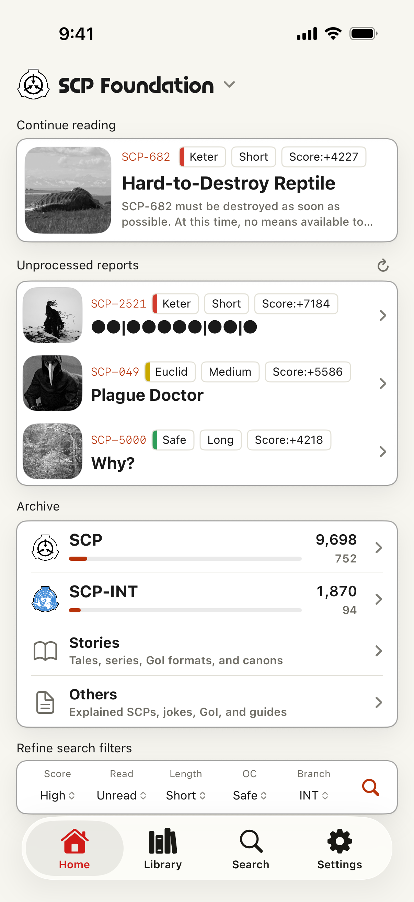
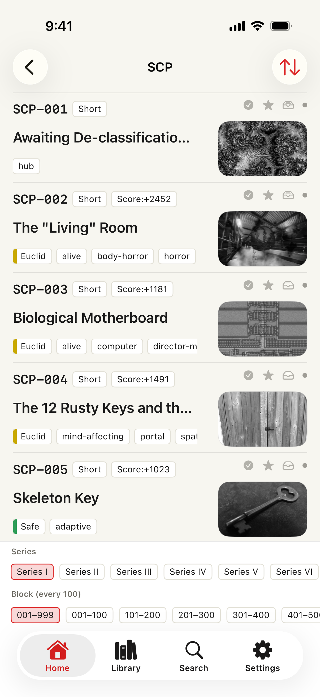
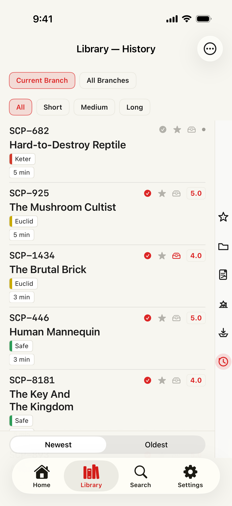
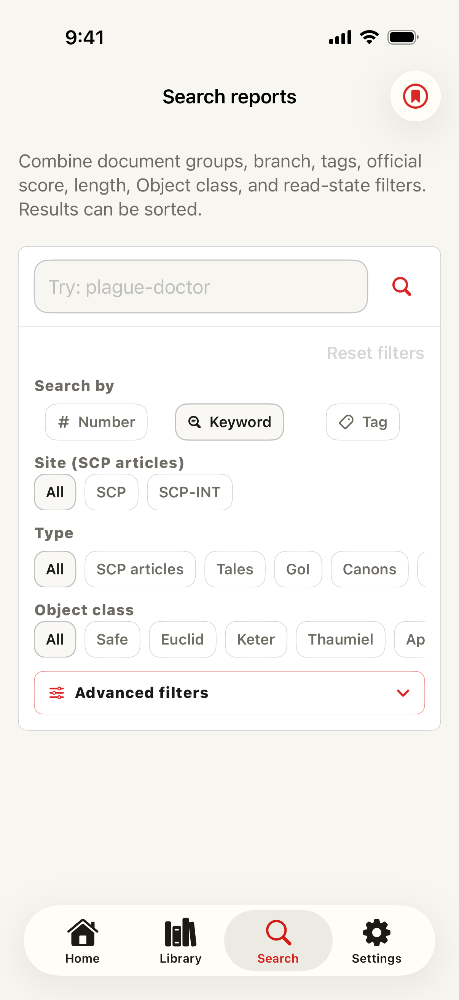

Feature overview
Find a report, then actually get back to it
SCP Docs brings archive entry points, search, reader controls, and personal reading state into one native iOS app. It is designed for the full archive loop: find the next file, save what matters, organize it in Library, and resume without rebuilding your trail.

Screenshots
Screens that match the workflow



Archive & Library workflow
From archive lists to a personal reading shelf
Use Home as the archive map
- Pick a branch
- Choose English, Japanese, French, Russian, Korean, Spanish, or Polish. Home, search, lists, article links, and the app language follow that branch context.
- Start from directories
- Browse SCP reports, Tales, Canons, Canon series, GoI, Joke SCPs, SCP-EX, collections, recent articles, guides, and related lists without needing the exact article number first. Every catalog adds an "Unread only" filter, sort by number or rating, and a "Top rated" lens for each branch's highest-rated articles.
- Jump when you know the target
- Use free number and title search for quick access. Recent searches reappear as one-tap chips. Premium advanced search adds tags, Object Class, document text, memos, read status, official score, length, and saved conditions.
Turn browsing into Library state
- Save the article
- Bookmark it, mark it read-later, rate it, or keep a memo so the report is no longer just another page in the archive.
- Resume from context
- History, continue-reading, read status, ratings, memos, and scroll position help you return to the same file or series after a break. Articles now reopen automatically at your last scroll position, and Read Later items are saved for offline reading automatically.
- Organize for longer projects
- Premium expands save limits, adds bookmark folders, supports memo editing, can sync Library state through your own iCloud Drive, and can store eligible articles for offline reading.
Practical guide
What to use when
- I want to browse without a specific article in mind
- Start on Home, choose the branch, then open Archive routes such as SCP, SCP-INT, Stories, or Others. The catalog screen lets you move by series and block, with article rows showing titles, Object Class, tags, scores, and thumbnail previews where available.
- I know the number, title, tag, or Object Class
- Use Search. Number and title lookup are available for normal use, while Premium advanced filters help narrow by document group, branch, tags, official score, length, Object Class, reading state, and memos.
- I found something I want to keep
- Save it from the reader or Library as a bookmark, read-later item, rating, memo, or folder entry. Those signals make the article visible later from Library instead of relying on memory or browser history.
- I stopped halfway through a series
- Use Continue reading, Library history, stored scroll position, and read status to return to the same report or track what has already been handled.
What it does
Core features
Branches
English, Japanese, French, Russian, Korean, Spanish, and Polish archives
Switching branches changes Home, search, lists, article destinations, and app language so each archive has its own reading context.
Directories
Cleaner archive routes before you know the number
Move through SCP reports, Tales, Canons, Canon series, GoI, Joke SCPs, SCP-EX, collections, recent articles, guides, and related lists from organized entry points. The Library index is organized into four sections: article feeds, canons & collections, ratings & discovery, and guides & reference.
Catalogs
Unread filters and a Top rated lens
Every catalog adds an "Unread only" filter and sort by number or official rating. A new "Top rated" lens gathers each branch's highest-rated articles in one place.
Search
Fast free search, deeper Premium filters
Open by SCP number, search titles, and use shortcuts for tags and Object Classes. Recent searches reappear as one-tap chips. Premium adds documents, memos, reading status, official score, length, and saved searches.
Reader
A focused article view
Typography controls, calmer themes, improved dark mode, scroll-to-top, offline snapshots, and closer rendering for specially formatted source pages.
Library
A personal shelf for the archive
History, read status, ratings, bookmarks, read-later, scroll position, memos, folders, and resume-reading data stay organized on your device. Articles reopen automatically at your last scroll position, and Read Later items are saved for offline reading automatically.
Share
Share as cards
Turn an article or hand-picked list into a styled card for X and other social apps, with templates and optional comments.
Premium
Stats, speech, and offline reading
Reading stats, text-to-speech that now follows each article's own language instead of the app language, memo editing, expanded save limits, ad removal, and offline storage support longer reading sessions.
Sync
iCloud-backed personal organization
When available, reading state, memos, saved searches, and bookmark folders sync through your own iCloud Drive. Saved searches can notify you about new matches on device.
Access tiers
Free vs Premium
| Capability | Free | Premium |
|---|---|---|
| Number & title search | ✓ | ✓ |
| Archive directories & catalog browsing | ✓ | ✓ |
| History, bookmarks, read-later, ratings | ✓ | ✓ |
| Reader themes, typography & dark mode | ✓ | ✓ |
| Ads | shown | hidden |
| Save limits | standard | expanded |
| Advanced search filters | — | ✓ |
| Memo editing | — | ✓ |
| Offline snapshots | — | ✓ |
| Reading stats | — | ✓ |
| Text-to-speech | — | ✓ |
| Saved searches & new-match alerts | — | ✓ |
| Bookmark folders & iCloud sync | — | ✓ |
Premium is provided as an auto-renewing subscription through the App Store. When available, a rewarded ad can grant temporary Premium access without a subscription.